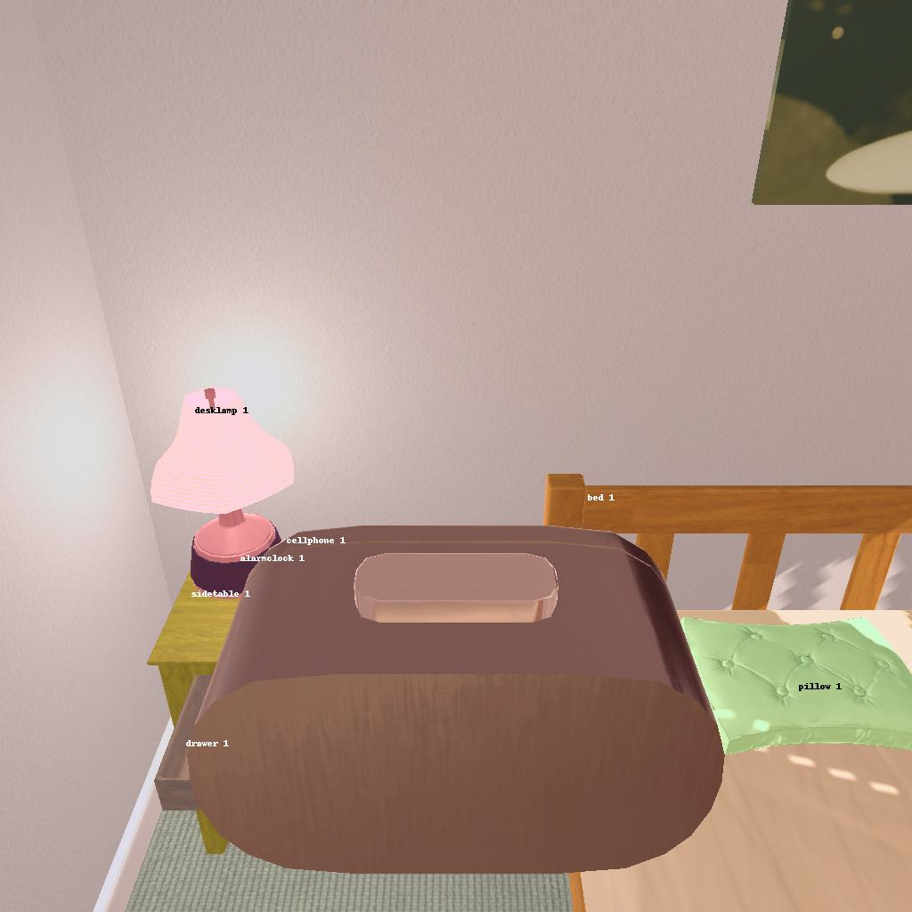

---------------------------------------------------------task: 0---------------------------------------------------------
--------------------------------------------------------------------------------------------------------------------------------------------------------------------
--------------------------------------------------------------------------------------------------------------------------------------------------------------------
Step:--------------------------------------------------------------------------14-------------------------------------------------------------------------------
----------------------------------------
VLM Prompt:
Image1:
**Instruction**
1. Analyze the provided image to identify all visible household objects, focusing on those relevant to the task description "look at alarmclock under the desklamp."
2. Use the analysis of the image and the task hint "The agent must find an object of the desired type, locate and turn on a light source with the desired object in-hand." to answer the question: what is the most reasonable action in the choices for the task description "look at alarmclock under the desklamp"?
4. Decide and write the answer using the template: The answer is: (i): , where i is the real number. If there is no desired object in the image, search every place based on **Initial Observation** to find the object. And if no one is exactly correct, choose a similar answer.
**Initial Observation**
You are in the middle of a room. Looking quickly around you, you can see bed (1), sidetable (1), drawer (1-11), dresser (1), safe (1), laundryhamper (1), garbagecan (1)
**Answer Choices**
(1): go to bed 1
(2): go to drawer 1
(3): go to dresser 1
(4): go to drawer 2
(5): go to drawer 3
(6): go to drawer 4
(7): go to drawer 5
(8): go to drawer 6
(9): go to drawer 7
(10): go to drawer 8
(11): go to drawer 9
(12): go to drawer 10
(13): go to drawer 11
(14): go to safe 1
(15): go to laundryhamper 1
(16): go to garbagecan 1
(17): put alarmclock 1 in/on sidetable 1
(18): use desklamp 1
(19): examine sidetable 1
**Answer**
Let's think step by step by following the instructions.
----------------------------------------
----------------------------------------
Original Response:
The task description is "look at alarmclock under the desklamp." From the image provided, we can see an alarmclock labeled "alarmclock 1" on the sidetable labeled "sidetable 1," which is under the desklamp labeled "desklamp 1." The task hint suggests that the agent needs to find the alarm clock and turn on a light source with the alarm clock in hand. However, since the alarm clock is already under the desklamp, there's no need to move it.
Therefore, the most reasonable action to accomplish the task of looking at the alarm clock under the desk lamp is to turn on the desklamp so that the alarm clock can be seen clearly.
The answer is: (18): use desklamp 1.
----------------------------------------
----------------------------------------
>>> Refine Original VLM Response and Get Pure Action: use desklamp 1
----------------------------------------
-----------------------------------------------------------------
Running time: 43.88988184928894 seconds
Total Money: 0.26716
-----------------------------------------------------------------
-----------------------------------------------------------------
Text Observation:You turn on the desklamp 1.
-----------------------------------------------------------------
SUCCEED